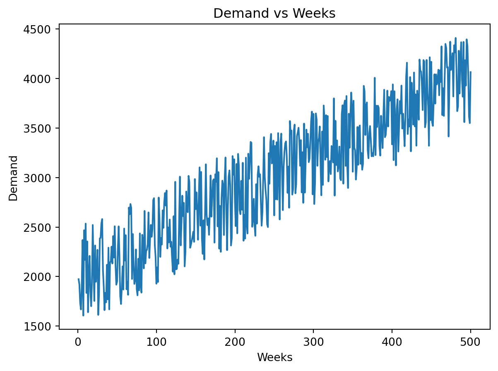
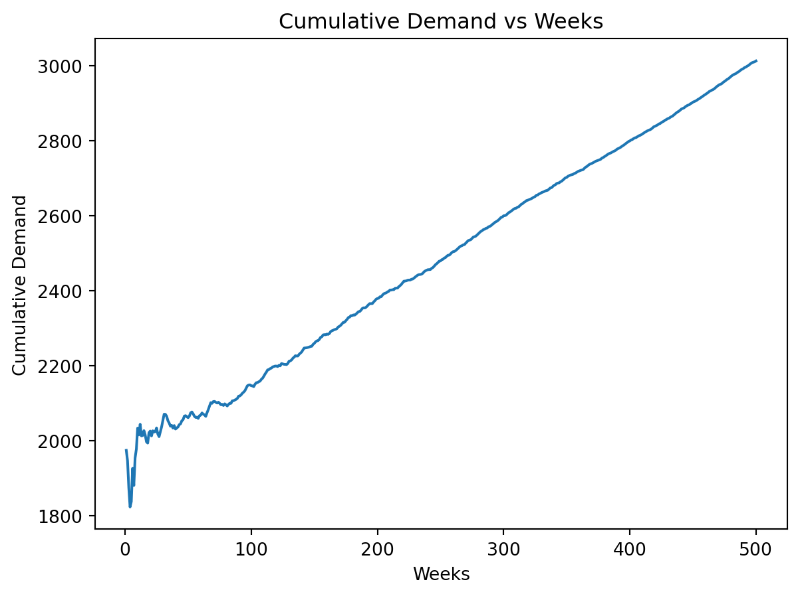
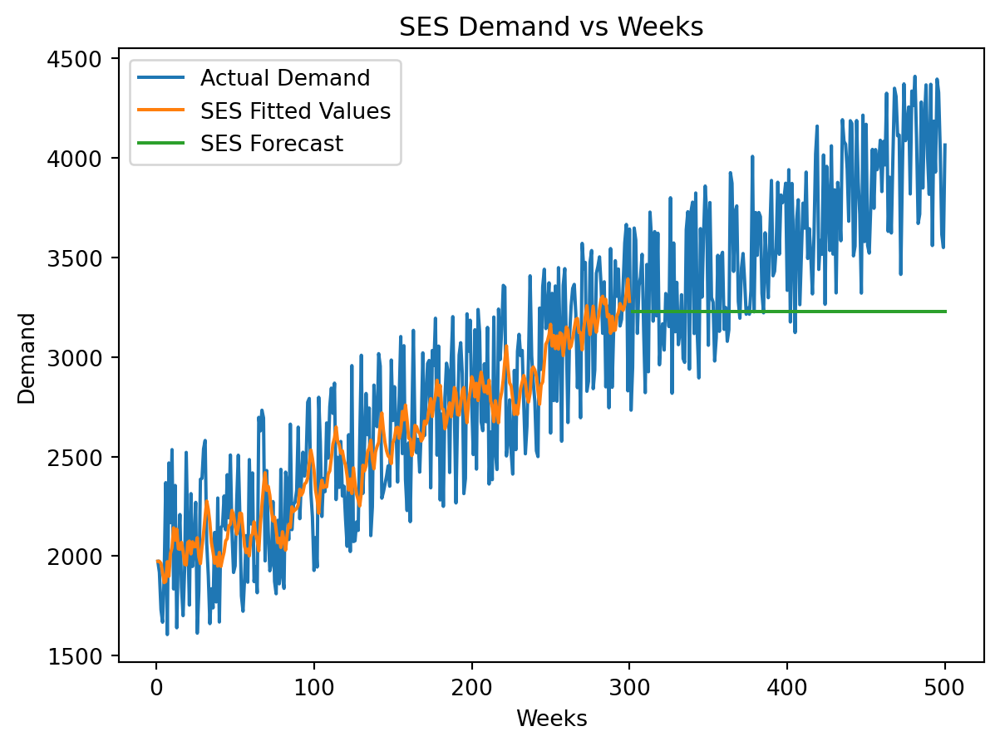
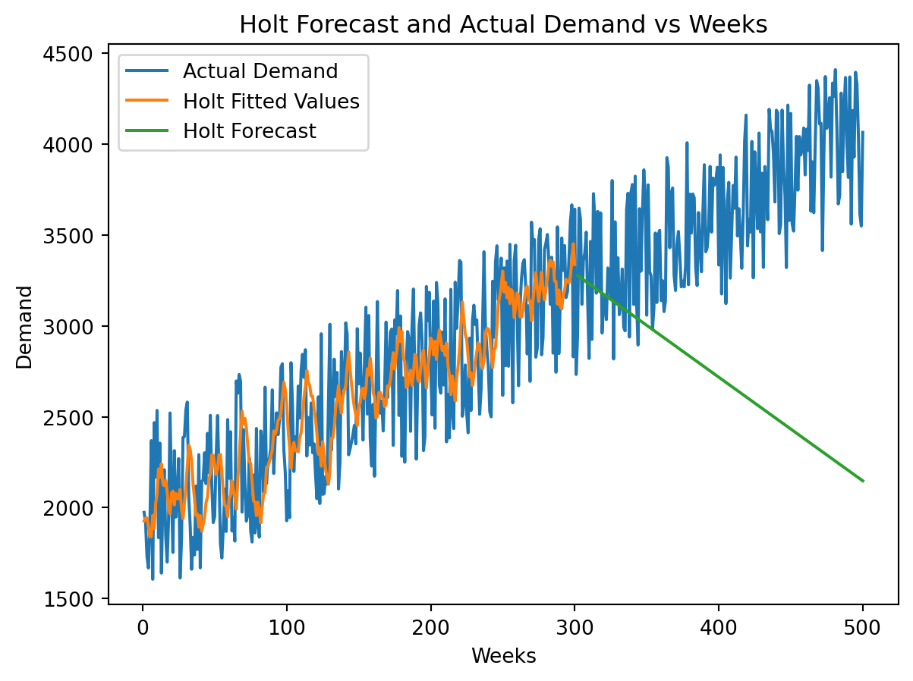
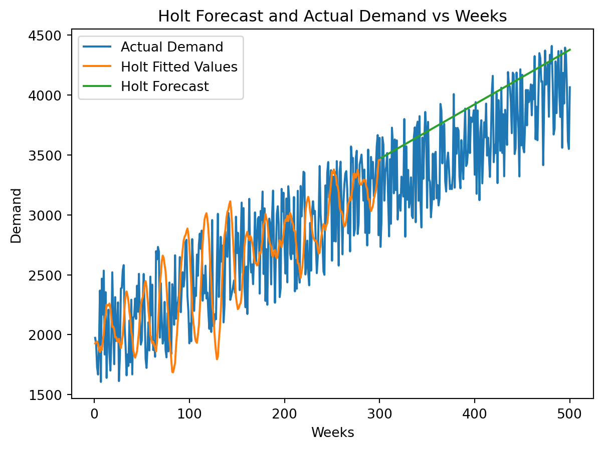

| t | demand | |
|---|---|---|
| 0 | 1 | 1974 |
| 1 | 2 | 1919 |
| 2 | 3 | 1731 |
| 3 | 4 | 1668 |
| 4 | 5 | 1895 |
Forecasting Methods
Forecasting Methods
Forecasting plays a critical role in a plethora of industries. It allows businesses to plan for the future, anticipate demand, and make informed decisions. In this notebook, we will explore some of the most popular forecasting methods and apply them to the problem of predicting the future sales of a retail store.
We’ll be going over averages, simple exponential smoothing, and Holt’s linear trend method.
Average
The natural tendency when trying to forecast a time series is to use the average of the series. This is a simple method that can be useful when the series is relatively stable and doesn’t have any trends or seasonality. However, this is the simplest of methods, and may not be maximizing your profits.
Simple Exponential Smoothing
Simple exponential smoothing (SES) is a technique that assigns a weight to past observations in order to make the next prediction. The weight can be between 0 and 1, with 1 meaning that it takes the full value of the previous observation and 0 meaning that it ignores the previous observation completely.
The formula for Simple Exponential Smoothing is:
\[ F_{t+1} = \alpha Y_t + (1 - \alpha) F_t \]
Where:
- \(F_{t+1}\) is the forecast for the next period
- \(Y_t\) is the actual value for the current period
- \(F_t\) is the forecast for the current period
- \(\alpha\) is the smoothing factor or level
We’ll see alpha be called the smoothing level in python packages for SES.
A loss function can also be incorporated into the SES model in order to optimize your parameters. A loss function is a method of evaluating how well your algorithm and its parameters are performing. The most common loss function for SES is the Mean Squared Error (MSE). The MSE is calculated by taking the difference between the actual value and the forecasted value, squaring it, and then taking the average of all the squared differences.
Once the loss function is calculated, the goal is to minimize the loss by adjusting the parameters which in this case is the smoothing factor. There are many optimization algorithms that can be used to minimize the loss function, such as gradient descent.
Holt’s Linear Trend Method
Holt’s Linear Trend Method is an extension of SES that incorporates a trend component. This method is useful when the data has a trend but no seasonality. The formula for Holt’s Linear Trend Method is:
\[ F_{t+h} = l_t + h \cdot b_t \]
Where:
- \(F_{t+h}\) is the forecast for the next period
- \(l_t\) is the smoothed value at the current period
- \(b_t\) is the trend for the current period
- \(h\) is the number of periods into the future you want to forecast
The formula for the level, \(l_t\), is:
\[ l_t = \alpha Y_t + (1 - \alpha)(l_{t-1} + b_{t-1}) \]
The formula for the trend, \(b_t\), is:
\[ b_t = \beta(l_t - l_{t-1}) + (1 - \beta)b_{t-1} \]
Where:
- \(\alpha\) is the smoothing factor for the level
- \(\beta\) is the smoothing factor for the trend
- \(Y_t\) is the actual value for the current period
- \(l_{t-1}\) is the smoothed value for the previous period
- \(b_{t-1}\) is the trend for the previous period
Just like with SES, Holt’s Linear Trend Method can incorporate a loss function to optimize the parameters. The loss function for Holt’s Linear Trend Method is the same as the loss function for SES, which is the Mean Squared Error (MSE).
Evaluation
Now lets get into our code! For our examples, we’ll be using data from a cupcake shop, Christie’s Cupcakes. The dataset contains the weekly sales of the store from nearly the past 10 years (500 weeks).
Some additional info for our calculations:
The retail price per cupcake is $4, unit cost per cupcake is $0.80, and there is no salvage costs.
We’ll use the first 300 weeks as our basis for forecasting the next 200 weeks up to week 500.
Initial Setup
Let’s start by loading the data and taking a look at the first few rows and some basic analysis.
| t | demand | |
|---|---|---|
| count | 500.000000 | 500.000000 |
| mean | 250.500000 | 3012.316000 |
| std | 144.481833 | 678.488964 |
| min | 1.000000 | 1606.000000 |
| 25% | 125.750000 | 2477.000000 |
| 50% | 250.500000 | 3045.000000 |
| 75% | 375.250000 | 3528.250000 |
| max | 500.000000 | 4410.000000 |
We can see that the mean demand among the dataset is 3012 cupcakes with a standard deviation of 678. We’ve confirmed there are 500 data points in the dataset through the “counts” variable. We’ll take a look at the plot of the data.
plt.plot(demand['t'], demand['demand'])
plt.xlabel('Weeks')
plt.ylabel('Demand')
plt.title('Demand vs Weeks')Text(0.5, 1.0, 'Demand vs Weeks')
There is a clear upward trend, with a decent amount of variation. That should give us a hint at which forecasting method to use. However, we will continue with all the methods to show the differences.
Average
As stated previously, averaging is the most common and simple method for forecasting. It could be moving average, or a cumulative average. Lets see what our average is for the first 300 weeks.
The average demand for cupcakes in the first 300 weeks is 2600.0 cupcakesWith our average demand, lets determine how much profit we would make in the last 200 weeks.
retail = 4
unit_cost = 0.8
demand['profit'] = np.where(demand['demand'] > avg_demand, retail*avg_demand - unit_cost*avg_demand, retail*demand['demand'] - unit_cost*avg_demand)
avg_profit = np.round(demand.loc[300:, 'profit'].mean(), 2)
print(f'The average profit for the last 200 weeks when using only the average demand for the past 300 weeks is ${avg_profit}')The average profit for the last 200 weeks when using only the average demand for the past 300 weeks is $8320.0profits = pd.DataFrame({'Profit ($)':[avg_profit]}, index=['Avg'])
profits| Profit ($) | |
|---|---|
| Avg | 8320.0 |
Using just the mean as the way to forecast for the next 200 weeks makes an average weekly profit of $7508.40. Not bad, but lets see how the cumulative average works out.
Cumulative Average
Now, it doesn’t matter about the past 300 weeks, since we are calculating a new average after every week, but we’ll still only calculate the average weekly profit for the last 200 weeks for comparison.
demand['cum_avg_demand'] = demand['demand'].expanding().mean()Let’s see what the cumulative average demand looks like when plotted.
plt.plot(demand['t'], demand['cum_avg_demand'])
plt.xlabel('Weeks')
plt.ylabel('Cumulative Demand')
plt.title('Cumulative Demand vs Weeks')
plt.show()
As expected, the cumulative average has much less variation as the weeks go on, and takes a very linear trend line.
demand['cum_profit'] = np.where(demand['demand'] > demand['cum_avg_demand'], retail*demand['cum_avg_demand'] - unit_cost*demand['cum_avg_demand'], retail*demand['demand'] - unit_cost*demand['cum_avg_demand'])
avg_cum_profit = np.round(demand.loc[300:, 'cum_profit'].mean(), 2)
print(f'The average profit for the last 200 weeks when using the cumulative average demand is ${avg_cum_profit}')The average profit for the last 200 weeks when using the cumulative average demand is $8968.06profits.loc['Avg Cumul.', 'Profit ($)'] = avg_cum_profit
profits| Profit ($) | |
|---|---|
| Avg | 8320.00 |
| Avg Cumul. | 8968.06 |
The average profit decreased for cumulative profit as compared to just using the average for the first 300 weeks.
Simple Exponential Smoothing
As discussed previously, Simple Exponential Smoothing (SES) assigns a weight to the current and previous level. If the weight (alpha) is high (closer to 1), that means the most recent data will weigh more heavily into the forecast than the past data points. On the opposite end, if alpha is low, it means the past data is used more to make the next forecast.
Let’s implement the SES method into our data. We’ll use a smoothing level of 0.2 initially and take a look at the plot.
SES_model = SimpleExpSmoothing(demand.loc[:300, 'demand']).fit(smoothing_level=0.2, optimized=False)
demand['SES_forecast'] = SES_model.fittedvalues
demand.loc[300:, 'SES_forecast'] = SES_model.forecast(200)
The SES method produces a singular value for the last 200 weeks. This is correct, and is why SES method is not always used. As seen in the formula, it uses keeps using the last actual value to make the next predicition. Once we want to forecast, it produces a singular value for all the future forecasts until you want to recalculate.
Lets calculate the profit for SES non-optimized version.
demand['SES_profit'] = np.where(demand['demand'] > demand['SES_forecast'], retail*demand['SES_forecast'] - unit_cost*demand['SES_forecast'], retail*demand['demand'] - unit_cost*demand['SES_forecast'])
avg_SES_profit = np.round(demand.loc[300:, 'SES_profit'].mean(), 2)
profits.loc['SES', 'Profit ($)'] = avg_SES_profit
profits| Profit ($) | |
|---|---|
| Avg | 8320.00 |
| Avg Cumul. | 8968.06 |
| SES | 10224.50 |
Implementing SES method increased profits by nearly $3000 weekly!
SES Optimized
Now we’ll use and optimized alpha with the SES method. Keep in mind, alpha is being optimized based on forecast, not on profit. We’ll see if the optimized alpha translates to increased profits.
SES_Opt_model = SimpleExpSmoothing(demand.loc[:300, 'demand']).fit(optimized=True)
demand['SES_Opt_forecast'] = SES_Opt_model.fittedvalues
demand.loc[300:, 'SES_Opt_forecast'] = SES_Opt_model.forecast(200)
demand['SES_Opt_profit'] = np.where(demand['demand'] > demand['SES_Opt_forecast'], retail*demand['SES_Opt_forecast'] - unit_cost*demand['SES_Opt_forecast'], retail*demand['demand'] - unit_cost*demand['SES_Opt_forecast'])
avg_SES_Opt_profit = np.round(demand.loc[300:, 'SES_Opt_profit'].mean(), 2)
profits.loc['SES Optim.', 'Profit ($)'] = avg_SES_Opt_profit
profits| Profit ($) | |
|---|---|
| Avg | 8320.00 |
| Avg Cumul. | 8968.06 |
| SES | 10224.50 |
| SES Optim. | 10249.05 |
The optimized version did increase profits by about $25 weekly!
Another method to ensure you have enough inventory to meet your demand is implementing a safety stock. A saftey stock allows you to be ready for the fluctuations in your demand. It is calculated by determing your cost of understocking and overstocking. Once you have those metrics, you determine your target service level, which the percentile of safety stock you want to keep on hand based on your error in your forecast to the actual demand. The Cost of understocking and overstocking are:
\[ Cu = retailprice - unitcost \] \[ Cu = unitcost - salvagevalue \]
The formula for Target Service Level is:
\[ TSL = Cu/(Cu-Co) \]
Let’s find the profit for our optimized SES model when incorporating a safety stock. First we’ll find the Target service level.
Cu = retail - unit_cost
Co = unit_cost
TSL = Cu/(Cu-Co)
TSL1.3333333333333333Our TSL for this product is 0.8, or 80% service level. We’ll use that to find our safety stock.
def cumulative_quantile(x):
return x.expanding().quantile(0.8)
demand['error_op'] = demand['demand'] - demand['SES_Opt_forecast']
demand['cum_error_optim'] = demand['error_op'].transform(cumulative_quantile)
demand['stockQ_op'] = demand['SES_Opt_forecast'] + demand['cum_error_optim']
demand['profit_op'] = np.where(demand['demand'] > demand['stockQ_op'], retail*demand['stockQ_op'] - unit_cost*demand['stockQ_op'], retail*demand['demand'] - unit_cost*demand['stockQ_op'])
avg_SES_Opt_safety_profit = np.round(demand.loc[300:, 'profit_op'].mean(), 2)
profits.loc['SES Optim. Safety', 'Profit ($)'] = avg_SES_Opt_safety_profit
profits| Profit ($) | |
|---|---|
| Avg | 8320.00 |
| Avg Cumul. | 8968.06 |
| SES | 10224.50 |
| SES Optim. | 10249.05 |
| SES Optim. Safety | 11039.99 |
Profits increased by over $350 weekly!
As discussed previously, the optimization is happening based on the forecasts, and not profits. Let’s see if we can find a better alpha which translates to higher profits.
SES_opt_alpha = SES_Opt_model.params['smoothing_level']
SES_opt_alpha0.08742752183220932alpha_list = []
SES_profit_list = []
for alpha in np.arange(0,1,0.01):
SES_Opt_model = SimpleExpSmoothing(demand.loc[:300, 'demand']).fit(smoothing_level = alpha, optimized=False)
demand['SES_Opt_forecast'] = SES_Opt_model.fittedvalues
demand.loc[300:, 'SES_Opt_forecast'] = SES_Opt_model.forecast(200)
demand['SES_Opt_profit'] = np.where(demand['demand'] > demand['SES_Opt_forecast'], retail*demand['SES_Opt_forecast'] - unit_cost*demand['SES_Opt_forecast'], retail*demand['demand'] - unit_cost*demand['SES_Opt_forecast'])
avg_SES_Opt_profit = np.round(demand.loc[300:, 'SES_Opt_profit'].mean(), 2)
alpha_list.append(alpha)
SES_profit_list.append(avg_SES_Opt_profit) The maximum profit capable through SES method is $10260.53 which resulted from an alpha value of 0.12.| Profit ($) | |
|---|---|
| Avg | 8320.00 |
| Avg Cumul. | 8968.06 |
| SES | 10224.50 |
| SES Optim. | 10249.05 |
| SES Optim. Safety | 11039.99 |
| SES Best Profit | 10260.53 |
The previous optimized model was fairly close with an alpha of 0.08 when compared to the alpha which produces the best profit for the next 200 weeks. This is not always the case where the optimized alpha is close to the alpha which produces the best profit. The optimzied model based on profit was less than when we incorporated safety stock, but still more than using the optimized parameters based on forecast.
This also depends on your strategy, whether its profit or hedging because you don’t want to potentially overstock.
Holt’s Linear Trend Method
Now that we’ve seen the SES method in work, it’s time for Holt’s Linear Trend Method. As the name says, Holt’s adds on to SES by introducing a trend in addition to the level.
We can clearly see a trend in the demand, so forecasts and this profits should increase.
Before we use Holt’s, we’ll first run a linear regression model to get an initial level and trend for our model by using the intercept and coefficient. This method can lead to better forecasting by having relatively accurate starting point.
lr_model = LinearRegression().fit(demand.loc[:300, 't'].values.reshape(-1, 1), demand.loc[:300,'demand'].values)
init_trend = lr_model.coef_[0]
init_level = lr_model.intercept_
init_level, init_trend(1923.0031229235879, 4.483137004686365)Now that we have our initial trend and level, we’ll implement those in Holt’s model. We’ll use 0.2 for alpha and beta for our initial calculations. We will plot the data as well to see how the forecasted demand follows the actual demand.
Holt_model = Holt(demand.loc[:300,'demand'], initialization_method="known", initial_level=init_level, initial_trend=init_trend).fit(smoothing_level=0.2, smoothing_trend=0.2, optimized=False)
demand['forecast_holt'] = Holt_model.fittedvalues
demand.loc[300:, 'forecast_holt'] = Holt_model.forecast(200)
The forecasted results are way off! The forecasts are decreasing rather than increasing. This is likely due to alpha and beta values combined with the large amount of variation in the data.
A lower smoothing level means it has less weight in the most recent data and more weight in the past data. Same goes for a low smoothing trend. A low smoothing trend would mean it is less volatile to short term fluctuations, which there is plenty in this data. Maybe the alpha and beta values are too large, even though they’re at the lower end of the range?
Let’s see what the optimized model comes up with.
Optimized Holts
Holt_opt_model = Holt(demand.loc[:300,'demand'], initialization_method="known", initial_level=init_level, initial_trend=init_trend).fit(optimized=True)
demand['forecast_holt_opt'] = Holt_opt_model.fittedvalues
demand.loc[300:, 'forecast_holt_opt'] = Holt_opt_model.forecast(200)
optimal_alpha = Holt_opt_model.model.params['smoothing_level']
optimal_beta = Holt_opt_model.model.params['smoothing_trend']
optimal_alpha, optimal_beta(1.4901161193847656e-08, 0.0)The optimized holt parameters are even lower than 0.2! Alpha and beta are both close to 0, meaning that forecastingrelies on the long term trend and levels, and should not be misguided by short term fluctuations.
Here’s a plot of the optimized data.
The fitted values we used to train our optimized holt value have almost no fluctuation. It is nearly a perfect linear line, which it should be with a beta of 0.
Now lets check our profits for both.
| Profit ($) | |
|---|---|
| Avg | 8320.00 |
| Avg Cumul. | 8968.06 |
| SES | 10224.50 |
| SES Optim. | 10249.05 |
| SES Optim. Safety | 11039.99 |
| SES Best Profit | 10260.53 |
| Holt | 8627.90 |
| Holt Optim. | 11241.21 |
Profits are still better than just using the average or the cumulative average when alpha and beta are 0.2, but less than all profits with SES.
However, our optimized Holt model did significantly better than any of the other models!
Before optimizing on profit rather than forecast, lets see what implementing a safety stock does for Holts.
demand['error_op'] = demand['demand'] - demand['forecast_holt_opt']
demand['cum_error_optim'] = demand['error_op'].transform(cumulative_quantile)
demand['stockQ_op'] = demand['forecast_holt_opt'] + demand['cum_error_optim']
demand['profit_op'] = np.where(demand['demand'] > demand['stockQ_op'], retail*demand['stockQ_op'] - unit_cost*demand['stockQ_op'], retail*demand['demand'] - unit_cost*demand['stockQ_op'])
avg_Holt_Opt_safety_profit = np.round(demand.loc[300:, 'profit_op'].mean(), 2)
profits.loc['Holt Optim. Safety', 'Profit ($)'] = avg_Holt_Opt_safety_profit
profits| Profit ($) | |
|---|---|
| Avg | 8320.00 |
| Avg Cumul. | 8968.06 |
| SES | 10224.50 |
| SES Optim. | 10249.05 |
| SES Optim. Safety | 11039.99 |
| SES Best Profit | 10260.53 |
| Holt | 8627.90 |
| Holt Optim. | 11241.21 |
| Holt Optim. Safety | 11318.08 |
Profit’s increased by about $80 a week!
Now lets see if we can find the best parameters with Holt’s model for optimizing profit.
alpha_list = []
beta_list = []
Holt_profit_list = []
for alpha in np.arange(0,1,0.01):
for beta in np.arange(0,1,0.01):
Holt_profit_model = Holt(demand.loc[:300, 'demand'], initialization_method="known", initial_level=init_level, initial_trend=init_trend).fit(smoothing_level = alpha, smoothing_trend = beta, optimized=False)
demand['Holt_demand'] = Holt_profit_model.fittedvalues
demand.loc[300:, 'Holt_demand'] = Holt_profit_model.forecast(200)
demand['Holt_Opt_profit'] = np.where(demand['demand'] > demand['Holt_demand'], retail*demand['Holt_demand'] - unit_cost*demand['Holt_demand'], retail*demand['demand'] - unit_cost*demand['Holt_demand'])
avg_Holt_profit = np.round(demand.loc[300:, 'Holt_Opt_profit'].mean(), 2)
alpha_list.append(alpha)
beta_list.append(beta)
Holt_profit_list.append(avg_Holt_profit)print(f'The optimal parameters in regards to profit were an alpha of {alpha_list[np.argmax(Holt_profit_list)]} and a beta of {np.round(beta_list[np.argmax(Holt_profit_list)], 2)}. This produced an average weekly profit of ${np.max(Holt_profit_list)}.')
profits.loc['Holt Best Profit', 'Profit ($)'] = np.max(Holt_profit_list)
profitsThe optimal parameters in regards to profit were an alpha of 0.07 and a beta of 0.95. This produced an average weekly profit of $11332.89.| Profit ($) | |
|---|---|
| Avg | 8320.00 |
| Avg Cumul. | 8968.06 |
| SES | 10224.50 |
| SES Optim. | 10249.05 |
| SES Optim. Safety | 11039.99 |
| SES Best Profit | 10260.53 |
| Holt | 8627.90 |
| Holt Optim. | 11241.21 |
| Holt Optim. Safety | 11318.08 |
| Holt Best Profit | 11332.89 |
In contradiction, the optimal parameters in regards to profit had a higher alpha, but still low, meaning it using past data created better results than current data in regards to smoothing level. However, the smoothing trend was very high (close to 1), meaning it was best to follow the most recent changes in trend than historical trend.
Let’s take a look at the plot to confirm.

The forecasted trend was still positive, but had a slightly higher slope than the optimized model. This caused the forecasts to be at the higher end of the actual demand in most weeks. Since the cost of understocking is much higher than overstocking, that was the difference in having the best possible profit using holt’s linear trend method.
Conclusion
We went over multiple methods to forecast demand, with the main emphasis on Simple Exponential Smoothing and Holt’s Linear Trend Method. SES does not account for trend, but does give weights to past values in order to determine how much the model should be using most recent and past values in its forecasting.
Holt’s method takes it a step further, incorporating a trend component into the equation, which allows the model to either increase, decrease, or stay the same depending on the parameters in your model and the data itself.